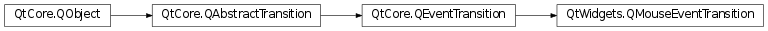

QMouseEventTransition¶
Note
This class was introduced in Qt 4.6.
Synopsis¶
Functions¶
- def
button() - def
hitTestPath() - def
modifierMask() - def
setButton(button) - def
setHitTestPath(path) - def
setModifierMask(modifiers)
Detailed Description¶
The
PySide2.QtWidgets.QMouseEventTransitionclass provides a transition for mouse events.
PySide2.QtWidgets.QMouseEventTransitionis part of The State Machine Framework .See also
QState.addTransition()
-
class
PySide2.QtWidgets.QMouseEventTransition(object, type, button[, sourceState=nullptr])¶ -
class
PySide2.QtWidgets.QMouseEventTransition([sourceState=nullptr]) Parameters: - sourceState –
PySide2.QtCore.QState - object –
PySide2.QtCore.QObject - type –
PySide2.QtCore.QEvent.Type - button –
PySide2.QtCore.Qt.MouseButton
Constructs a new mouse event transition for events of the given
typefor the givenobject, with the givenbuttonandsourceState.Constructs a new mouse event transition with the given
sourceState.- sourceState –
Return type: PySide2.QtCore.Qt.MouseButtonReturns the button that this mouse event transition checks for.
-
PySide2.QtWidgets.QMouseEventTransition.hitTestPath()¶ Return type: PySide2.QtGui.QPainterPathReturns the hit test path for this mouse event transition.
-
PySide2.QtWidgets.QMouseEventTransition.modifierMask()¶ Return type: PySide2.QtCore.Qt.KeyboardModifiersReturns the keyboard modifier mask that this mouse event transition checks for.
-
PySide2.QtWidgets.QMouseEventTransition.setButton(button)¶ Parameters: button – PySide2.QtCore.Qt.MouseButtonSets the
buttonthat this mouse event transition will check for.
-
PySide2.QtWidgets.QMouseEventTransition.setHitTestPath(path)¶ Parameters: path – PySide2.QtGui.QPainterPathSets the hit test path for this mouse event transition to
path. If a valid path has been set, the transition will only trigger if the mouse event position (QMouseEvent.pos()) is inside the path.See also
PySide2.QtWidgets.QMouseEventTransition.hitTestPath()QPainterPath.contains()
-
PySide2.QtWidgets.QMouseEventTransition.setModifierMask(modifiers)¶ Parameters: modifiers – PySide2.QtCore.Qt.KeyboardModifiersSets the keyboard modifier mask that this mouse event transition will check for to
modifierMask.
© 2018 The Qt Company Ltd. Documentation contributions included herein are the copyrights of their respective owners. The documentation provided herein is licensed under the terms of the GNU Free Documentation License version 1.3 as published by the Free Software Foundation. Qt and respective logos are trademarks of The Qt Company Ltd. in Finland and/or other countries worldwide. All other trademarks are property of their respective owners.